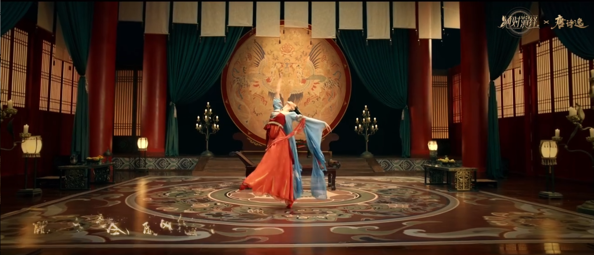
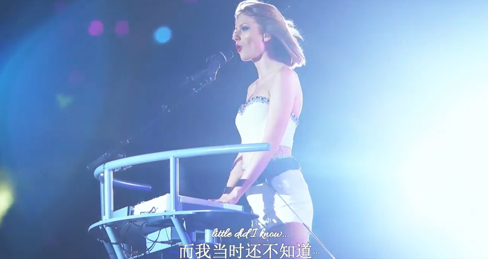
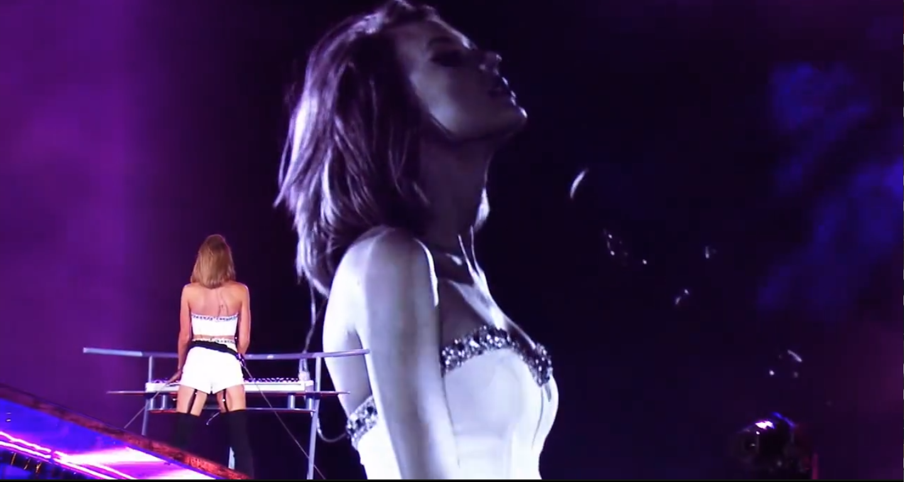

我所爱的舞蹈
情动于中而形于言
舞蹈是什么

情动于中而形于言，言之不足故嗟叹之，嗟叹之不足故永歌之，永歌之不足，不知手之舞之，足之蹈之也。
如果觉得开心你就拍拍手。在你开心的时候会想要跳舞吗？在你悲伤的时候呢，在你激动的时候呢？
音乐
音乐，是一种感受
音乐像一座城堡。节奏是基底，带来基础和生命；和声是外部设计，勾勒出轮廓；
音程是一砖一瓦，构筑出纵向高度；对位法是内部构造，决定了城堡的复杂程度；
曲式则是室内设计，与音乐的时间和空间有着紧密联系。


音程是一砖一瓦，构筑出纵向高度；对位法是内部构造，决定了城堡的复杂程度；
曲式则是室内设计，与音乐的时间和空间有着紧密联系。